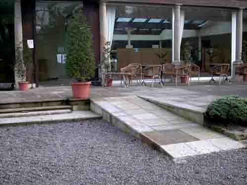
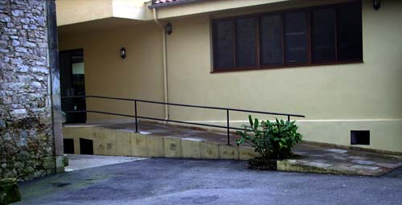

RAMPA ANTERIOR DE ACCESO A LAS TERRAZAS
En La Quinta, estamos muy sensibilizados con el problema que las barreras arquitectónicas suponen a una cantidad siempre demasiado grande de personas. Por ese motivo al realizar las reformas de la antigua finca, se suprimieron todas ellas. En este momento, los accesos cuentan con rampas descansadas o muy descansadas, no existen dentro de los comedores escalones de ningún tipo y contamos con dos baños especiales. Uno completamente adaptado a todas las necesidades y otro sobre dimensionado para personas con menos problemas.
A la rampa anterior se accede por medios propios desde el aparcamiento, siendo necesario desplazarse un tramo por el camino. Sin embargo, a la posterior se llega en coche para evitar todo desplazamiento extra.
Ambas rampas permiten el acceso rodado a los salones , cafetería y aseos

RAMPA POSTERIOR CON ACCESO A SALÓN Y TERRAZAS